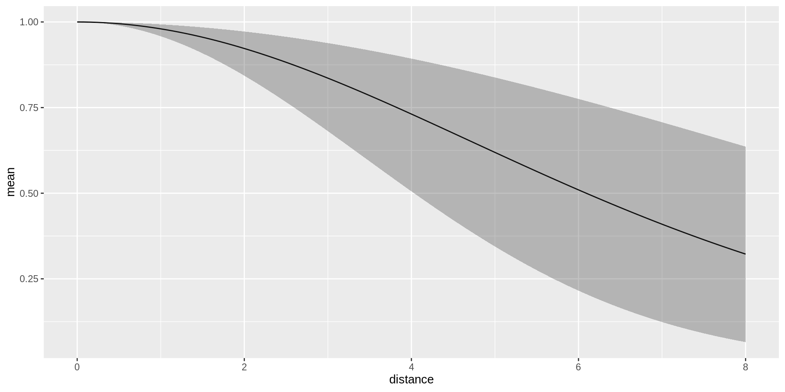
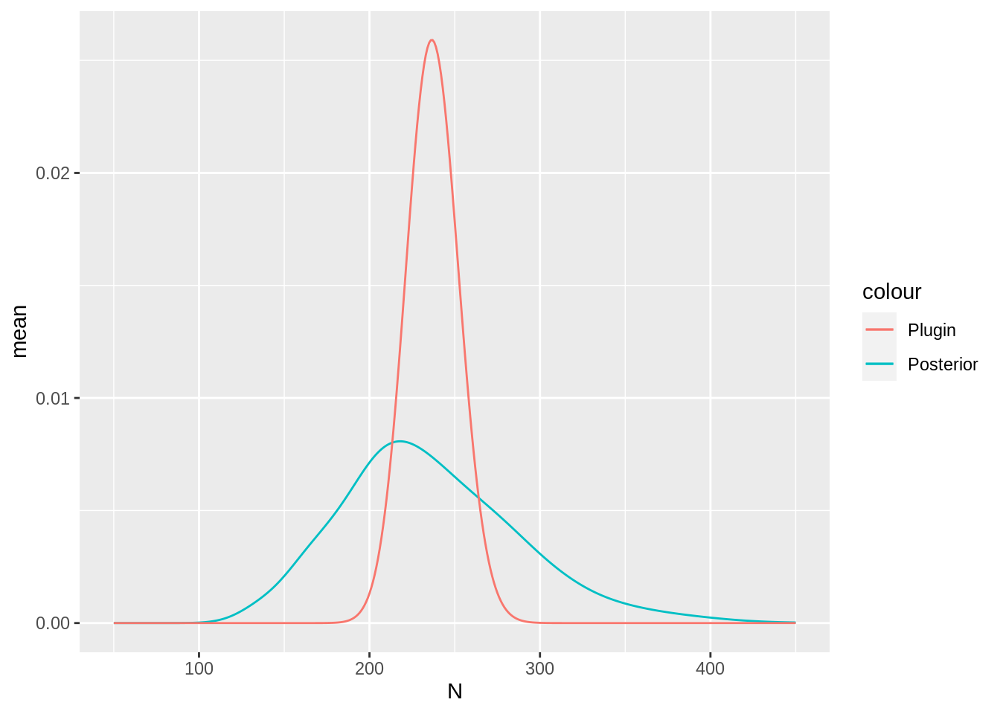
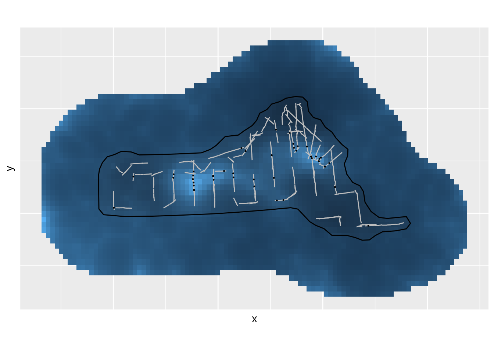
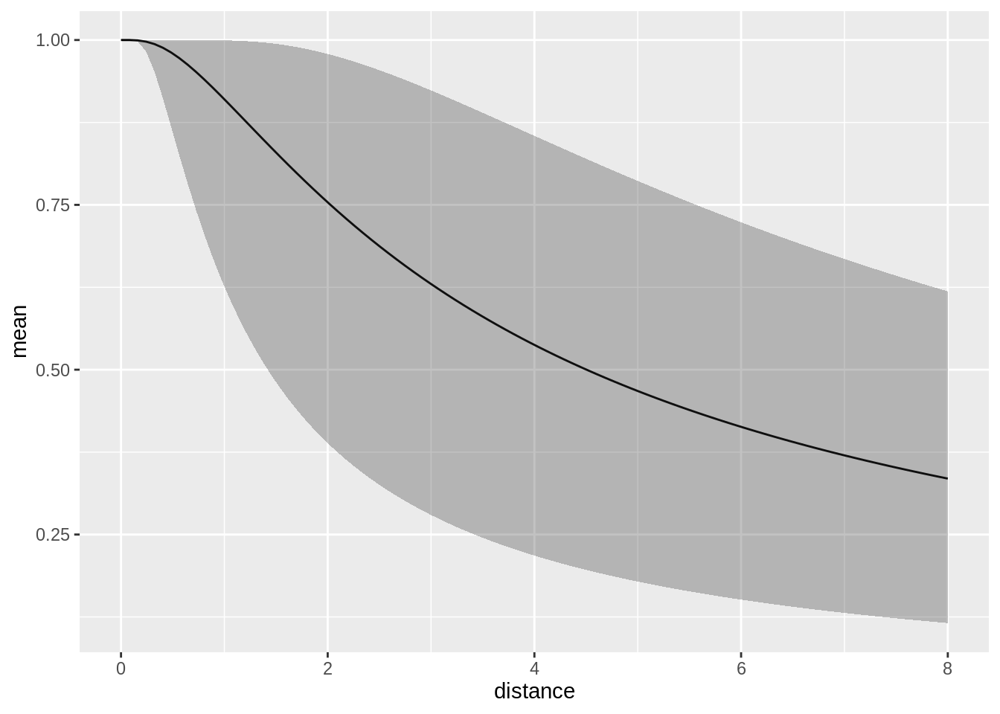
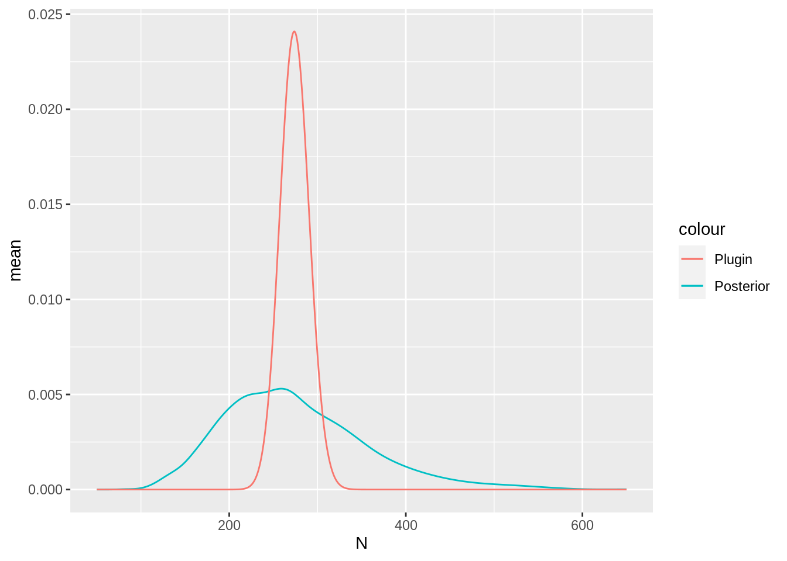
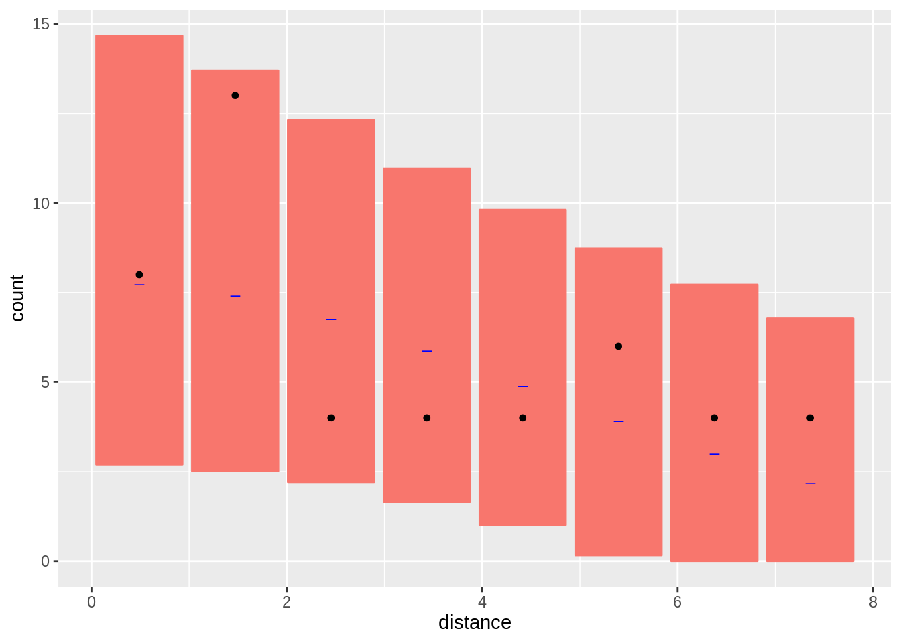
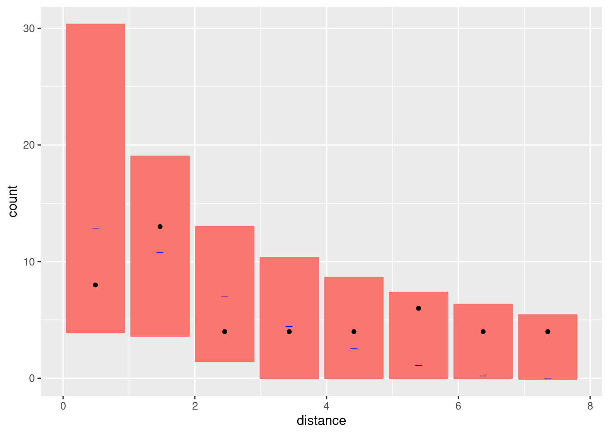
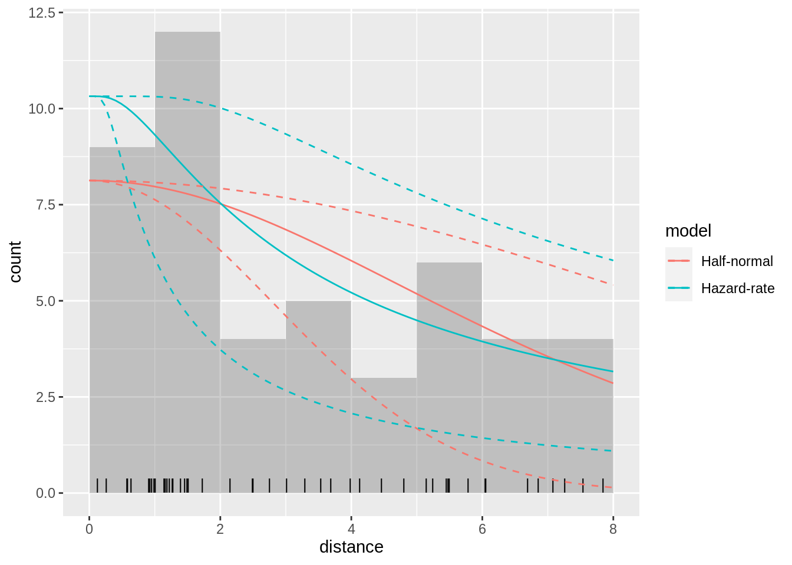

LGCPs - Distance sampling
David Borchers
2021-02-23
Source:vignettes/web/2d_lgcp_distancesampling.Rmd
2d_lgcp_distancesampling.RmdIntroduction
We’re going to estimate distribution and abundance from a line transect survey of dolphins in the Gulf of Mexico. These data are also available in the R package dsm (where they go under the name mexdolphins). In inlabru the data are called mexdolphin.
Get the data
We’ll start by loading the data and extracting the mesh (for convenience).
data(mexdolphin, package = "inlabru")
mesh <- mexdolphin$meshPlot the data (the initial code below is just to get rid of tick marks)
noyticks <- theme(
axis.text.y = element_blank(),
axis.ticks = element_blank()
)
noxticks <- theme(
axis.text.x = element_blank(),
axis.ticks = element_blank()
)
ggplot() +
gg(mexdolphin$ppoly) +
gg(mexdolphin$samplers, color = "grey") +
gg(mexdolphin$points, size = 0.2, alpha = 1) +
noyticks +
noxticks +
theme(legend.key.width = unit(x = 0.2, "cm"), legend.key.height = unit(x = 0.3, "cm")) +
theme(legend.text = element_text(size = 6)) +
guides(fill = FALSE) +
coord_equal()
Spatial model with a half-normal detection function
The samplers in this dataset are lines, not polygons, so we need to tell inlabru about the strip half-width, W, which in the case of these data is 8. We start by plotting the distances and histogram of frequencies in distance intervals:
W <- 8
ggplot(data.frame(mexdolphin$points)) +
geom_histogram(aes(x = distance),
breaks = seq(0, W, length = 9),
boundary = 0, fill = NA, color = "black"
) +
geom_point(aes(x = distance), y = 0, pch = "|", cex = 4)
We need to define a half-normal detection probability function. This must take distance as its first arguent and the linear predictor of the sigma parameter (which we will call lsig) as its second:
Specify and fit an SPDE model to these data using a half-normal detection function form. We need to define a (Matern) covariance function for the SPDE
matern <- inla.spde2.pcmatern(mexdolphin$mesh,
prior.sigma = c(2, 0.01),
prior.range = c(50, 0.01)
)We need to now separately define the components of the model (the SPDE, the Intercept and the detection function parameter lsig)
cmp <- ~ mySPDE(main = coordinates, model = matern) +
lsig(1) + Intercept(1)… and the formula, which describes how these components are combined to form the linear predictor (remembering that we need an offset due to the unknown direction of the detections!):
Then fit the model, passing both the components and the formula (previously the formula was constructed invisibly by inlabru), and specify integration domains for the spatial and distance dimensions:
fit <- lgcp(
components = cmp,
mexdolphin$points,
samplers = mexdolphin$samplers,
domain = list(
coordinates = mesh,
distance = INLA::inla.mesh.1d(seq(0, 8, length.out = 30))
),
formula = form
)Look at the SPDE parameter posteriors
spde.range <- spde.posterior(fit, "mySPDE", what = "range")
plot(spde.range)
spde.logvar <- spde.posterior(fit, "mySPDE", what = "log.variance")
plot(spde.logvar)
Predict spatial intensity, and plot it:
pxl <- pixels(mesh, nx = 100, ny = 50)
pr.int <- predict(fit, pxl, ~ exp(mySPDE + Intercept))
ggplot() +
gg(pr.int) +
gg(mexdolphin$ppoly) +
gg(mexdolphin$samplers, color = "grey") +
gg(mexdolphin$points, size = 0.2, alpha = 1) +
noyticks +
noxticks +
theme(legend.key.width = unit(x = 0.2, "cm"), legend.key.height = unit(x = 0.3, "cm")) +
theme(legend.text = element_text(size = 6)) +
guides(fill = FALSE) +
coord_equal()
Predict the detection function and plot it, to generate a plot like the one below. Here, we should make sure that it doesn’t try to evaluate the effects of components that can’t be evaluated using the given input data. Here, we’re only providing distances and no spatial coordinates, so we cannot evaluate the spatial random field in this predict() call. We can specify this by providing a vector of component names to include in the prediction calculations, here only “lsig”, with include = "lsig". See ?predict.bru for more information.
distdf <- data.frame(distance = seq(0, 8, length = 100))
dfun <- predict(fit, distdf, ~ hn(distance, lsig), include = "lsig")
plot(dfun)
We can look at the posterior for expected number of dolphins as usual:
predpts <- ipoints(mexdolphin$ppoly, mexdolphin$mesh)
Lambda <- predict(fit, predpts, ~ sum(weight * exp(mySPDE + Intercept)))
Lambdaand including the randomness about the expected number. In this case, it turns out that you need lots of posterior samples, e.g. 2,000 to smooth out the Monte Carlo error in the posterior, and this takes a little while to compute:
Ns <- seq(50, 450, by = 1)
Nest <- predict(fit, predpts,
~ data.frame(
N = Ns,
density = dpois(Ns,
lambda = sum(weight * exp(mySPDE + Intercept))
)
),
n.samples = 2000
)
Nest$plugin_estimate <- dpois(Nest$N, lambda = Lambda$mean)
ggplot(data = Nest) +
geom_line(aes(x = N, y = mean, colour = "Posterior")) +
geom_line(aes(x = N, y = plugin_estimate, colour = "Plugin"))
Hazard-rate Detection Function
Try doing this all again, but use this hazard-rate detection function model:
Solution:
formula1 <- coordinates + distance ~ mySPDE +
log(hr(distance, lsig)) +
Intercept + log(2)
fit1 <- lgcp(
components = cmp,
mexdolphin$points,
samplers = mexdolphin$samplers,
domain = list(
coordinates = mesh,
distance = INLA::inla.mesh.1d(seq(0, 8, length.out = 30))
),
formula = formula1
)Plots:
spde.range <- spde.posterior(fit1, "mySPDE", what = "range")
plot(spde.range)
spde.logvar <- spde.posterior(fit1, "mySPDE", what = "log.variance")
plot(spde.logvar)
pxl <- pixels(mesh, nx = 100, ny = 50)
pr.int1 <- predict(fit1, pxl, ~ exp(mySPDE + Intercept))
ggplot() +
gg(pr.int1) +
gg(mexdolphin$ppoly) +
gg(mexdolphin$samplers, color = "grey") +
gg(mexdolphin$points, size = 0.2, alpha = 1) +
noyticks +
noxticks +
theme(legend.key.width = unit(x = 0.2, "cm"), legend.key.height = unit(x = 0.3, "cm")) +
theme(legend.text = element_text(size = 6)) +
guides(fill = FALSE) +
coord_equal()
distdf <- data.frame(distance = seq(0, 8, length = 100))
dfun1 <- predict(fit1, distdf, ~ hr(distance, lsig))
plot(dfun1)
predpts <- ipoints(mexdolphin$ppoly, mexdolphin$mesh)
Lambda1 <- predict(fit1, predpts, ~ sum(weight * exp(mySPDE + Intercept)))
Lambda1
#> mean sd q0.025 median q0.975 smin smax cv
#> 1 293.933 81.00755 161.9862 284.2427 479.2343 144.3713 579.0019 0.2755987
#> var
#> 1 6562.224
Ns <- seq(50, 650, by = 1)
Nest1 <- predict(
fit1,
predpts,
~ data.frame(
N = Ns,
density = dpois(Ns,
lambda = sum(weight * exp(mySPDE + Intercept))
)
),
n.samples = 2000
)
Nest1$plugin_estimate <- dpois(Nest1$N, lambda = Lambda1$mean)
ggplot(data = Nest1) +
geom_line(aes(x = N, y = mean, colour = "Posterior")) +
geom_line(aes(x = N, y = plugin_estimate, colour = "Plugin"))
Comparing the models
deltaIC(fit1, fit)
#> Model DIC Delta.DIC
#> 1 fit1 770.0221 0.00000
#> 2 fit 772.0730 2.05085
# Look at the goodness-of-fit of the two models in the distance dimension
bc <- bincount(
result = fit,
observations = mexdolphin$points$distance,
breaks = seq(0, max(mexdolphin$points$distance), length = 9),
predictor = distance ~ hn(distance, lsig)
)
attributes(bc)$ggp
bc1 <- bincount(
result = fit1,
observations = mexdolphin$points$distance,
breaks = seq(0, max(mexdolphin$points$distance), length = 9),
predictor = distance ~ hn(distance, lsig)
)
attributes(bc1)$ggp
Fit Models only to the distance sampling data
Half-normal first
formula <- distance ~ log(hn(distance, lsig)) + Intercept
cmp <- ~ lsig(1) + Intercept(1)
dfit <- lgcp(
components = cmp,
mexdolphin$points,
domain = list(distance = INLA::inla.mesh.1d(seq(0, 8, length.out = 30))),
formula = formula
)
detfun <- predict(dfit, distdf, ~ hn(distance, lsig))Half-normal next
formula1 <- distance ~ log(hr(distance, lsig)) + Intercept
cmp <- ~ lsig + Intercept
dfit1 <- lgcp(
components = cmp,
mexdolphin$points,
domain = list(distance = INLA::inla.mesh.1d(seq(0, 8, length.out = 30))),
formula = formula1
)
detfun1 <- predict(dfit1, distdf, ~ hr(distance, lsig))Compare detection function models by DIC:
deltaIC(dfit1, dfit)
#> Model DIC Delta.DIC
#> 1 dfit1 -75.10825 0.00000
#> 2 dfit -73.07133 2.03692Plot both lines on histogram of observations First scale lines to have same area as that of histogram Half-normal:
hnline <- data.frame(distance = detfun$distance, p = detfun$mean, lower = detfun$q0.025, upper = detfun$q0.975)
wts <- diff(hnline$distance)
wts[1] <- wts[1] / 2
wts <- c(wts, wts[1])
hnarea <- sum(wts * hnline$p)
n <- length(mexdolphin$points$distance)
scale <- n / hnarea
hnline$En <- hnline$p * scale
hnline$En.lower <- hnline$lower * scale
hnline$En.upper <- hnline$upper * scaleHazard-rate:
hrline <- data.frame(distance = detfun1$distance, p = detfun1$mean, lower = detfun1$q0.025, upper = detfun1$q0.975)
wts <- diff(hrline$distance)
wts[1] <- wts[1] / 2
wts <- c(wts, wts[1])
hrarea <- sum(wts * hrline$p)
n <- length(mexdolphin$points$distance)
scale <- n / hrarea
hrline$En <- hrline$p * scale
hrline$En.lower <- hrline$lower * scale
hrline$En.upper <- hrline$upper * scaleCombine lines in a single object for plotting
dlines <- rbind(hnline, hrline)
dlines$model <- c(rep("Half-normal", length(hnline$En)), rep("Hazard-rate", length(hnline$En)))Plot without the 95% credible intervals
ggplot(data.frame(mexdolphin$points)) +
geom_histogram(aes(x = distance), breaks = seq(0, 8, length = 9), alpha = 0.3) +
geom_point(aes(x = distance), y = 0.2, shape = "|", size = 3) +
geom_line(data = dlines, aes(x = distance, y = En, group = model, col = model))
Plot with the 95% credible intervals
ggplot(data.frame(mexdolphin$points)) +
geom_histogram(aes(x = distance), breaks = seq(0, 8, length = 9), alpha = 0.3) +
geom_point(aes(x = distance), y = 0.2, shape = "|", size = 3) +
geom_line(data = dlines, aes(x = distance, y = En, group = model, col = model)) +
geom_line(data = dlines, aes(x = distance, y = En.lower, group = model, col = model), lty = 2) +
geom_line(data = dlines, aes(x = distance, y = En.upper, group = model, col = model), lty = 2)